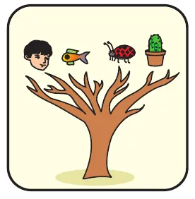
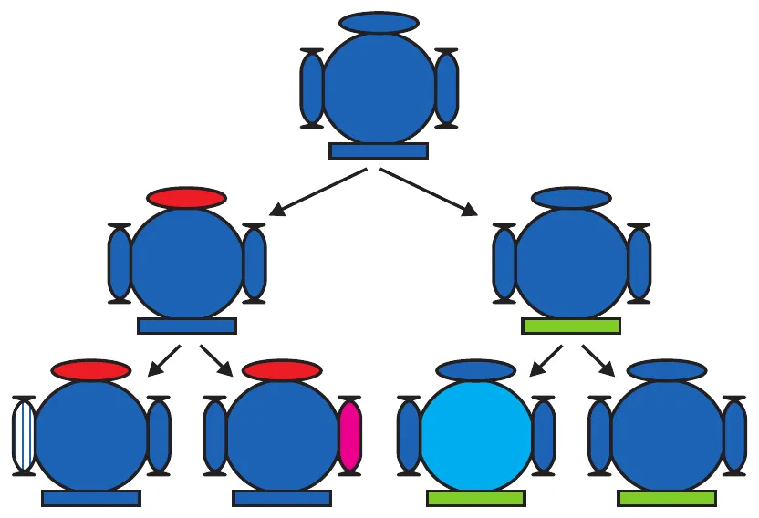
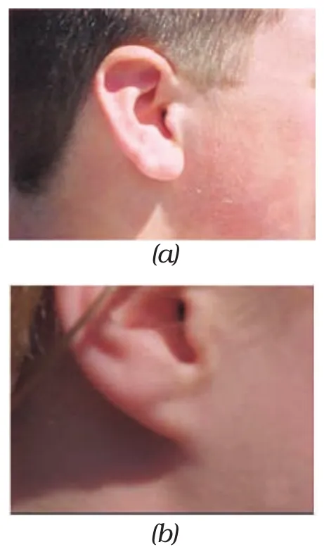
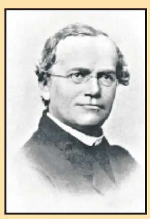
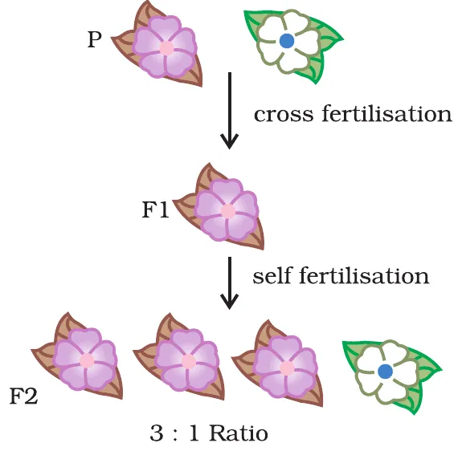
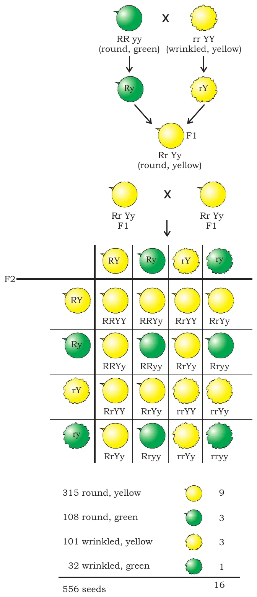
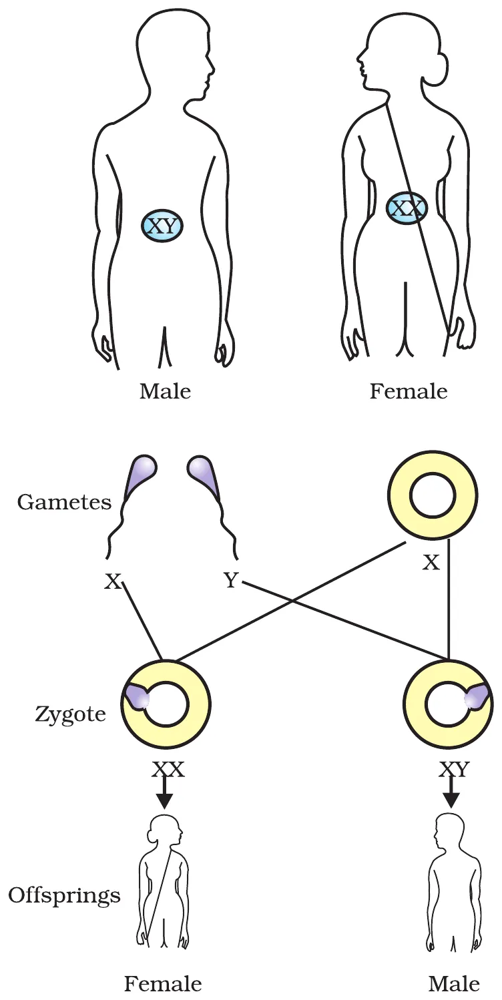

📌 Chapter snapshot
- Chapter 8 of NCERT Class 10 Science (reprint 2026-27), in Unit II “World of Living”, which carries 25 marks in the 80-mark theory paper together with Life Processes, Control and Coordination, and How do Organisms Reproduce?
- It is a short chapter (6 pages), but it is asked every year: a 4-mark case study on Mendel (2023, 2024, 2026), MCQs on sex determination and the dihybrid F1, and a 3-mark question on chromosomes and DNA stability (2025).
- Learn by heart: 3 : 1 (F2 phenotype, one trait), 1 : 2 : 1 (F2 genotype), 9 : 3 : 3 : 1 (F2 phenotype, two traits), XX girl, XY boy, sex decided by the father.
What is this chapter about?
Reproduction makes new individuals that are similar but subtly different. This chapter is about how those differences (variations) are created and inherited.
- Some variation arises even in asexual reproduction (small errors in DNA copying).
- Sexual reproduction makes the number of successful variations much larger.
- NCERT example: a field of sugarcane (grown vegetatively) shows very little variation among plants. But in human beings and other sexually reproducing animals, quite distinct variations are visible.

🧩 Key words first
Heredity: the transmission of characters (traits) from parents to their offspring.
Variation: the differences among individuals of the same species, or between parents and their offspring.
Trait: a characteristic, such as height of a plant, colour of a seed, or type of earlobe.
Accumulation of variation during reproduction
- Inheritance from the previous generation gives the next generation both a common basic body design and subtle changes in it.
- When this new generation reproduces, the second generation has differences inherited from the first, plus newly created differences. So variations accumulate (pile up) over generations (Fig. 8.1).
- Fig. 8.1 shows a single individual reproducing, as in asexual reproduction. If one bacterium divides, and the two divide again, the four bacteria are very similar, with only minor differences from small inaccuracies in DNA copying.
- With sexual reproduction, even greater diversity is generated, because DNA from two parents is combined.

Do all variations survive equally?
- No. Depending on the nature of the variation, different individuals get different kinds of advantages.
- NCERT example: bacteria that can withstand heat survive better in a heat wave.
- Selection of variants by environmental factors forms the basis for evolutionary processes.
⭐ Exam line
Variations help a species survive: if the environment changes, the individuals carrying a useful variation survive and reproduce, so the species does not die out. Sexual reproduction produces more variation than asexual reproduction.
🧬 Try it: watch variation pile up
Each shape is an individual. Its cap, base and side colours are its traits. Press “Next generation” and compare how much variety appears with asexual and with sexual reproduction.
Heredity and inherited traits
The most obvious outcome of reproduction is still individuals of similar design. The rules of heredity decide how traits and characteristics are reliably inherited.
8.2.1 Inherited traits
- A child bears all the basic features of a human being.
- But it does not look exactly like its parents, and human populations show a great deal of variation.
- Example: the earlobe. In some of us the lowest part of the ear is free (hangs loose); in others it is attached closely to the side of the head (Fig. 8.2). These are two variants found in human populations.
Activity 8.1: Survey earlobes in your class and in parents. What rule can you suggest?

👂 Class survey calculator (Activity 8.1)
Type the numbers from your class survey to get the percentages.
Rules for inheritance: Mendel's contributions
- Both the father and the mother contribute practically equal amounts of genetic material to the child.
- So each trait can be influenced by both paternal and maternal DNA: for each trait there are two versions in every child. Which one shows? Mendel worked out the rules.

Gregor Johann Mendel (1822–1884)
Educated in a monastery, he studied science and mathematics at the University of Vienna. He failed the exams for a teaching certificate, went back to his monastery and started growing garden peas. Others had studied inheritance before, but Mendel blended science with mathematics and was the first to keep count of individuals showing a trait in each generation. This led him to the laws of inheritance. He is called the Father of Genetics.
Why garden peas? (extra, often asked)
Round/wrinkled seeds, tall/short plants, violet/white flowers, yellow/green seeds.
Pure lines are easy to keep, and crosses can be made by hand.
Short life cycle and many seeds per plant, so large counts are possible.
The monohybrid cross (one trait: height)
- Parents (P): a pure tall plant (TT) is crossed with a pure short plant (tt).
- F1 (first generation): all plants were tall. There were no halfway (medium-height) plants. Only one parental trait was seen, not a mixture.
- Were these F1 tall plants the same as the tall parent? To test this, both the parental tall plants and the F1 tall plants were allowed to self-pollinate.
- Parental tall plants gave all tall progeny. But the F2 progeny of the F1 tall plants were not all tall: one quarter were short.
- Conclusion: both tallness and shortness were inherited in the F1 plants, but only tallness was expressed.
What Mendel proposed
- Two copies of a factor (now called a gene) controlling each trait are present in a sexually reproducing organism.
- The two copies may be identical (TT or tt) or different (Tt), depending on the parentage.
- Both TT and Tt are tall; only tt is short. A single copy of ‘T’ is enough to make the plant tall; both copies must be ‘t’ for it to be short.
- A trait like ‘T’ that shows even with one copy is dominant. A trait like ‘t’ that shows only when both copies are the same is recessive.
| Term | Meaning | Example |
|---|---|---|
| Gene | A section of DNA that provides information for one protein; the unit of heredity | Gene for height |
| Alleles (extra) | Different forms of the same gene | T and t |
| Genotype (extra) | The genetic make-up for a trait | TT, Tt, tt |
| Phenotype (extra) | The trait that is seen | Tall, short |
| Homozygous / pure | Both copies the same | TT, tt |
| Heterozygous / hybrid | Two different copies | Tt |
| F1, F2 | First and second filial (offspring) generations | F1 = Tt; F2 = TT, Tt, tt |
Writing the cross (how to answer in the board exam)
| F1 × F1: Tt × Tt | ||
|---|---|---|
| Gametes → | T | t |
| T | TT (tall) | Tt (tall) |
| t | Tt (tall) | tt (short) |
⭐ Ratios to remember (monohybrid)
F2 phenotypic ratio = Tall : Short = 3 : 1
F2 genotypic ratio = TT : Tt : tt = 1 : 2 : 1
Activity 8.2: What experiment would confirm that the F2 generation really had a 1 : 2 : 1 ratio of TT, Tt and tt?
Fig. 8.4: which trait is dominant?
The book asks you to work this out. Parents: violet flower × white flower → F1 is violet → F1 self-fertilised → F2 has 3 violet : 1 white.
Answer: violet flower colour is dominant (it alone shows in F1) and white is recessive (it hides in F1 and reappears in one-quarter of F2).

🌱 Try it: grow an F2 field
Each seed from a Tt × Tt cross gets one random copy from each parent. Grow seeds and see the ratio settle near 3 : 1. With only a few plants the ratio wobbles; Mendel counted hundreds.
Punnett square builder
Pick the genotype of each parent. The square fills itself and gives the ratios. Use it to check any cross in your homework.
🔢 Cross any two parents
Two traits at once: independent inheritance
What happens when plants differing in two characters are crossed?
- Tall plant with round seeds × short plant with wrinkled seeds → F1 are all tall with round seeds. So tallness and round seeds are dominant.
- F1 plants self-pollinated → F2 has tall-round and short-wrinkled plants (parental types), and also new combinations: tall-wrinkled and short-round.
- So the tall/short trait and the round/wrinkled trait are independently inherited.
The cross in Fig. 8.5 (seed shape and colour)
- P: RRyy (round, green) × rrYY (wrinkled, yellow). Gametes: Ry and rY.
- F1: all RrYy (round, yellow). Round and yellow are dominant.
- Each F1 plant makes four kinds of gametes in equal numbers: RY, Ry, rY, ry.
- F2: 4 × 4 = 16 combinations in the checkerboard.

| F2 seeds | Count (Fig. 8.5) | Ratio | Type |
|---|---|---|---|
| Round, yellow | 315 | 9 | Parental (F1 type) |
| Round, green | 108 | 3 | Parental (P1 type) |
| Wrinkled, yellow | 101 | 3 | Parental (P2 type) |
| Wrinkled, green | 32 | 1 | New combination |
| Total | 556 | 16 |
💡 Quick check
556 ÷ 16 ≈ 34.75. Then 9 × 34.75 ≈ 313, 3 × 34.75 ≈ 104, 1 × 34.75 ≈ 35: very close to Mendel's counts. Also note: round : wrinkled = (315 + 108) : (101 + 32) = 423 : 133 ≈ 3 : 1, and yellow : green = 416 : 140 ≈ 3 : 1. Each trait still follows 3 : 1 on its own, which is exactly what “independent” means.
⭐ Exam line
In a dihybrid cross the F2 phenotypic ratio is 9 : 3 : 3 : 1. The appearance of new combinations of traits (like round-green and wrinkled-yellow when the parents were round-green and wrinkled-yellow, or tall-wrinkled when the parents were tall-round and short-wrinkled) shows that traits are inherited independently.
🟡 Tap the checkerboard
Pick a seed type to light up all the boxes that give it. Tap any box to read its genotype.
How do these traits get expressed?
- Cellular DNA is the information source for making proteins.
- A section of DNA that provides information for one protein is called the gene for that protein.
NCERT example: how a gene controls plant height
- Gene (a section of DNA)
- Makes an enzyme (a protein)
- The enzyme makes a plant growth hormone
- Amount of hormone decides height
Enzyme works efficiently
Gene altered, enzyme less efficient
Thus genes control characteristics, or traits.
Why each germ cell has only one set of genes
- If both parents help decide a trait, both must contribute a copy of the same gene. So each pea plant has two sets of all genes, one from each parent.
- For this to work, each germ cell must have only one gene set.
- If a germ cell simply passed on one whole gene set from one parent, the traits ‘R’ and ‘y’ of Fig. 8.5 would always stay linked together and could not be inherited independently.
- The answer: each gene set is not one long DNA thread but separate independent pieces, each called a chromosome.
- Each cell has two copies of each chromosome, one from the male parent and one from the female parent.
- Every germ cell takes one chromosome from each pair, which may be of maternal or paternal origin.
- When two germ cells combine, the normal number of chromosomes is restored in the progeny, ensuring the stability of the DNA of the species.
🤔 Think (NCERT asks this)
Asexually reproducing organisms also follow similar rules of inheritance. How? There is only one parent, so the offspring get a copy of that parent's DNA, with only small changes from copying errors. There is no mixing of two gene sets, so the offspring are nearly identical to the parent and variation builds up slowly.
🧵 Try it: shuffle the chromosomes into a germ cell
This cell has 3 chromosome pairs: one copy from the father (blue) and one from the mother (pink). Each germ cell takes one from each pair at random. Make germ cells and count the different kinds.
Sex determination
How is the sex of a newborn individual decided? Different species use very different strategies.
In a few reptiles, the temperature at which the fertilised eggs are kept decides whether the young will be male or female.
In snails, individuals can change sex, so sex is not genetically determined.
In human beings, sex is largely genetically determined: the genes inherited from our parents decide it.
Sex chromosomes in humans
- Most human chromosomes have a maternal and a paternal copy: we have 22 such pairs (called autosomes).
- One pair, the sex chromosomes, is not always a perfect pair.
- Women have a perfect pair, both called X: women are XX.
- Men have a mismatched pair: one normal-sized X and one short Y: men are XY.
- So a human body cell has 23 pairs = 46 chromosomes (22 pairs + XX or XY).
Inheritance of X and Y (Fig. 8.6)
- Mother (XX) makes eggs that all carry X.
- Father (XY) makes two kinds of sperms in equal numbers: half with X, half with Y.
- Egg (X) + sperm (X) → XX → girl. Egg (X) + sperm (Y) → XY → boy.
- So half the children will be boys and half girls (on average), and the sex of the child is decided by what it inherits from the father.

| Gametes | Sperm X (from father) | Sperm Y (from father) |
|---|---|---|
| Egg X (from mother) | XX: girl | XY: boy |
⭐ Exam line
All children get an X from the mother. A child who gets an X from the father is a girl; one who gets a Y from the father is a boy. So the mother cannot be held responsible for the sex of the child; the chance of a boy or a girl is 50 : 50 in every pregnancy.
👶 Try it: who decides, mother or father?
The egg always carries X. A sperm is picked at random: X or Y. Fertilise many times and watch the boy : girl count.
Differences to learn (2- and 3-mark favourites)
Dominant vs recessive trait
| Dominant | Recessive |
|---|---|
| Expressed even when only one copy of its gene is present (TT or Tt) | Expressed only when both copies are recessive (tt) |
| Appears in the F1 generation | Hidden in F1; reappears in one-quarter of F2 |
| Shown by a capital letter (T) | Shown by a small letter (t) |
| Example: tall plant, round seed, violet flower | Example: short plant, wrinkled seed, white flower |
Genotype vs phenotype
| Genotype | Phenotype |
|---|---|
| The genetic make-up (pair of genes) of an organism for a trait | The visible or observable trait |
| Cannot be seen directly; found from crosses | Can be seen |
| TT, Tt, tt | Tall, short |
| F2 monohybrid ratio 1 : 2 : 1 | F2 monohybrid ratio 3 : 1 |
Monohybrid vs dihybrid cross
| Monohybrid | Dihybrid |
|---|---|
| Parents differ in one pair of contrasting traits | Parents differ in two pairs of contrasting traits |
| Tall (TT) × short (tt) | Round green (RRyy) × wrinkled yellow (rrYY) |
| F2 phenotypic ratio 3 : 1 | F2 phenotypic ratio 9 : 3 : 3 : 1 |
| Shows dominance and that both traits pass to F1 | Shows independent inheritance and new combinations |
Homozygous vs heterozygous
| Homozygous (pure) | Heterozygous (hybrid) |
|---|---|
| Both genes of the pair are the same: TT or tt | The two genes are different: Tt |
| Breeds true on self-pollination | Gives both types on self-pollination (3 : 1) |
| Makes one kind of gamete | Makes two kinds of gametes (T and t) |
Autosomes vs sex chromosomes (humans)
| Autosomes | Sex chromosomes |
|---|---|
| 22 pairs | 1 pair |
| Always a matched pair, same in males and females | XX in females (matched), XY in males (mismatched) |
| Carry genes for body characters | Decide the sex of the individual |
Variation in asexual vs sexual reproduction
| Asexual | Sexual |
|---|---|
| Very little variation | Much more variation |
| Only from small errors in DNA copying | From copying errors and mixing of DNA from two parents |
| Example: sugarcane field, bacteria | Example: human beings, pea plants |
Previous year board questions
These questions come from the CBSE Class 10 Science board papers of the years shown, with the paper code (set) and marks. Tap a question to see a model answer.
Where we could not check a question word for word (for example its options or its case text), it is reworded and marked so. The years, sets and marks shown are only those we could confirm from the paper or a published solution of it.
2026 · 31/1/1 · 1 mark (reworded)Which of the given statements about sex determination in human beings are correct? (Statements about the X-carrying gamete from the mother, the X-carrying gamete from the father and the Y-carrying gamete from the father.)
2026 · 31/1/1, Q15 (same question in set 31/1/3), case-based, 4 marks. Case (reworded): Mendel crossed a pure tall garden pea plant with a pure short one. All the F1 plants were tall.
2026 · 1 mark(a) Why did only tall plants appear in the F1 progeny?
2026 · 1 mark(b) What method did Mendel use to obtain the F2 progeny?
2026 · 2 marks(c) Write one difference between a dominant and a recessive trait.
2026 · 2 marks (OR)(c) Write two observations made by Mendel about the F1 progeny.
2025 · 31/1/1 · 1 mark (options reworded)Pea plants with round and green seeds (RRyy) are crossed with pea plants having wrinkled and yellow seeds (rrYY). What will the seeds of the F1 generation be like?
2025 · 31/1/1 · 1 markAssertion (A): A human child bears all the basic features of human beings. Reason (R): It looks exactly like its parents, showing very little variations.
2025 · 31/1/1 · 3 marks(a) What are chromosomes? (b) Explain in brief how stability of DNA content of a species is ensured in sexually reproducing organisms.
(b) Each body cell has two copies of each chromosome, one from each parent. Germ cells are formed so that each takes only one chromosome from each pair (half the DNA). When a male and a female germ cell fuse at fertilisation, the normal number is restored in the zygote. So the DNA content stays the same from generation to generation.
2024 · 31/1/1 · 1 mark (reworded)Which of the given statements about how the sex of a child is determined in humans are correct?
2024 · 31/1/1 · 1 mark (reworded)Which of the given statements about chromosomes are correct?
2024 · 31/1/1, Q38, case-based, 4 marks (reworded). Case: Mendel's experiments with garden peas, crossing pure tall and pure short plants, and round-yellow (RRYY) with wrinkled-green (rryy) plants.
2024 · 1 mark(i) State two observations Mendel made in the F1 plants of a cross between pure tall and pure short pea plants.
2024 · 1 mark(ii) Give one difference between dominant and recessive traits.
2024 · 2 marks(iii) In the cross RRYY × rryy, how was the F2 generation obtained, what ratio was seen and what can be concluded?
2024 · 2 marks (OR)(iii) Justify: a trait may be inherited but not expressed.
2023 · 31/1/1, Q38, case-based, 4 marks (reworded). Case: Mendel's experiments with pea plants showing contrasting traits.
2023 · 31/1/1(a) Give examples of contrasting traits Mendel studied in pea plants.
2023 · 31/1/1(b) What are dominant and recessive traits?
2023 · 31/1/1(c) What phenotypic ratio is obtained in the F2 generation of a dihybrid cross, and what does it show? (OR: show the cross with a checkerboard.)
Board-pattern practice
Extra questions in the current CBSE pattern (not from a specific year). Tap to check.
Assertion–Reason (1 mark each)
(a) Both A and R are true, and R explains A. (b) Both true, but R does not explain A. (c) A true, R false. (d) A false, R true.
1A: In a cross between pure tall and pure short pea plants, all F1 plants are tall. R: Tallness is a dominant trait.
2A: The sex of a child is determined by the mother. R: The mother has two X chromosomes.
3A: New combinations of traits appear in the F2 of a dihybrid cross. R: The genes for seed shape and seed colour are inherited independently.
4A: Germ cells have only one set of genes. R: Fertilisation restores the normal number of chromosomes.
5A: Variation is more in sexually reproducing organisms. R: Sexual reproduction involves DNA from only one parent.
Short answer
S1A tall pea plant is crossed with a short one. Half the offspring are tall and half are short. Write the genotypes of the parents.
S2How many types of gametes are made by a plant of genotype RrYy? Name them.
S3Out of 800 F2 plants from a Tt × Tt cross, how many are expected to be (a) short, (b) pure tall?
S4In a dihybrid F2 of 160 seeds, how many are expected to be wrinkled and green?
S5Why is the probability of a boy or a girl 50 : 50 in every pregnancy?
Case-based (4 marks)
C1A gardener crossed a pea plant with violet flowers with one having white flowers. All F1 plants had violet flowers. On selfing F1, he got 300 violet and 100 white plants. (i) Which trait is dominant? (ii) Write the genotypes of F1. (iii) Give the F2 genotypic ratio. (iv) How can he find out if a violet F2 plant is pure?
Long answer (5 marks)
L1With the help of a cross, explain how Mendel's experiments show that traits are inherited independently. What ratio did he get?
L2Explain with a flow chart how the sex of a child is determined in human beings. Why is it wrong to blame the mother for the birth of a girl?
Genotype detective
Read the result of the cross and pick the answer.
What you have learnt
- Variations arising during reproduction can be inherited; they accumulate over generations. Sexual reproduction gives more variation than asexual.
- These variations may lead to increased survival of individuals (heat-resistant bacteria in a heat wave). Selection of variants by the environment is the basis of evolution.
- Sexually reproducing individuals have two copies of genes for the same trait. If the copies are not identical, the trait that is expressed is dominant, the other recessive.
- Monohybrid cross: F1 all tall; F2 3 : 1 (phenotype), 1 : 2 : 1 (genotype).
- Traits may be inherited separately, giving new combinations in the offspring (dihybrid F2 9 : 3 : 3 : 1).
- A gene is a section of DNA that codes for one protein; genes control traits (gene → enzyme → hormone → height).
- Genes are on separate chromosomes; each germ cell takes one of each pair; fertilisation restores the number and keeps DNA stable.
- Sex is decided by different factors in various species (temperature in some reptiles, sex change in snails). In humans: 22 pairs + XX (girl) or XY (boy); the father's chromosome (X or Y) decides.
Test yourself
Tap an answer. Score: 0 / 15
1. Tall violet × short white gives all violet, about half short. The tall parent is (NCERT Ex. 1)
Half short → Tt; all violet → WW.
2. The F2 phenotypic ratio of a monohybrid cross is
1 : 2 : 1 is the genotypic ratio.
3. The F2 genotypic ratio of a monohybrid cross is
TT : Tt : tt.
4. RRyy × rrYY. The F1 seeds are
All RrYy: round and yellow are dominant (CBSE 2025).
5. In a dihybrid F2 of 16, the number with both recessive traits is
Only rryy (wrinkled green).
6. A section of DNA that provides information for one protein is a
NCERT definition of a gene.
7. Which plant is heterozygous?
Two different copies of the gene.
8. Human females have sex chromosomes
Men are XY.
9. A child who gets a Y chromosome from the father will be a
X (mother) + Y (father) = XY.
10. Number of pairs of autosomes in humans
22 pairs + 1 pair of sex chromosomes = 23 pairs.
11. In some reptiles, sex is decided by
Snails change sex; humans use X and Y.
12. Mendel's F1 from tall × short had
No halfway plants; tall is dominant.
13. Mendel got the F2 generation by
CBSE 2026 asked this.
14. Tt × tt gives tall and short in the ratio
Half Tt, half tt.
15. A field of sugarcane shows very little variation because sugarcane
Asexual reproduction gives only minor variations.
Answers to all questions
Every question from the chapter, with answers you can write in the exam. Tap to open.
Questions (page 129)
1.If a trait A exists in 10% of a population of an asexually reproducing species and a trait B exists in 60% of the same population, which trait is likely to have arisen earlier?
2.How does the creation of variations in a species promote survival?
Questions (page 133)
1.How do Mendel's experiments show that traits may be dominant or recessive?
2.How do Mendel's experiments show that traits are inherited independently?
3.A man with blood group A marries a woman with blood group O and their daughter has blood group O. Is this information enough to tell you which of the traits – blood group A or O – is dominant? Why or why not?
4.How is the sex of the child determined in human beings?
Activities
8.1Earlobe survey: suggest a possible rule for the inheritance of earlobe types.
8.2What experiment would confirm the 1 : 2 : 1 ratio of TT, Tt and tt in F2?
Fig. 8.4Work out which trait would be considered dominant and which one recessive in Fig. 8.4.
Exercises (page 133)
1.A Mendelian experiment consisted of breeding tall pea plants bearing violet flowers with short pea plants bearing white flowers. The progeny all bore violet flowers, but almost half of them were short. This suggests that the genetic make-up of the tall parent can be depicted as (a) TTWW (b) TTww (c) TtWW (d) TtWw
2.A study found that children with light-coloured eyes are likely to have parents with light-coloured eyes. On this basis, can we say anything about whether the light eye colour trait is dominant or recessive? Why or why not?
3.Outline a project which aims to find the dominant coat colour in dogs.
- Choose two pure-breeding dogs with contrasting coat colours, e.g. black (BB) and white (bb), whose ancestors always had the same colour.
- Cross them and observe the puppies (F1). The colour shown by all F1 puppies is the dominant one; the hidden colour is recessive.
- To confirm, cross F1 dogs with each other. In F2, the dominant and recessive colours should appear in about 3 : 1.
- Repeat with several litters to get large numbers and reliable ratios.